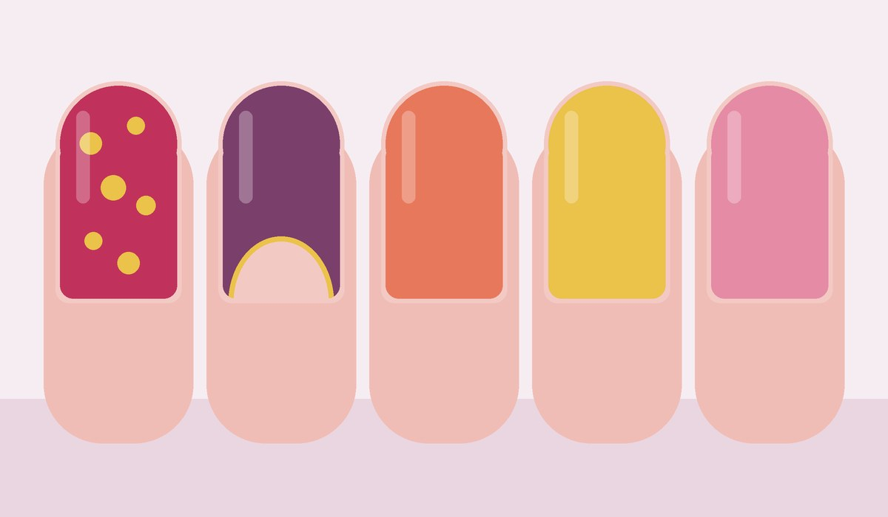

Dots
Dip the tip of a bobby pin or a toothpick in a contrasting polish and press it down lightly. Space the dots however you want. Overlapping is fine, and mixing sizes looks even better.
INLS 572 · Assignment 2
Three nail designs that look better when they come out a little off.
Here is what I figured out after way too many ruined manicures: the designs that look best are the ones that are supposed to look a little uneven. A dot that sits slightly off center looks like a choice. A wobbly line looks like a mistake. So everything on this page is built around shapes that hide a shaky hand.
None of these need a gel lamp or a tiny brush. You need regular polish, something small and pointed for dotting, and about twenty minutes where you are not going to touch anything.

Dip the tip of a bobby pin or a toothpick in a contrasting polish and press it down lightly. Space the dots however you want. Overlapping is fine, and mixing sizes looks even better.
Stick a paper hole reinforcement sticker at the base of a bare nail, paint the rest, and peel the sticker off before the polish fully dries. A slightly crooked curve still reads as on purpose.
Pick a different color for each finger, or alternate two colors. Nothing has to match exactly, which is the whole point. If one nail comes out streaky, you only redo that one.
Almost every chip I have had traces back to skipping prep. Wipe each nail with remover or rubbing alcohol so no oil is left on it, then put on a thin base coat. Thin coats dry faster and last longer than one thick coat.
Wait a full minute between coats and finish with a top coat. Dermatologists also say to leave your cuticles alone and wear gloves when you wash dishes, which I now do. The American Academy of Dermatology tips cover the rest of the basics.